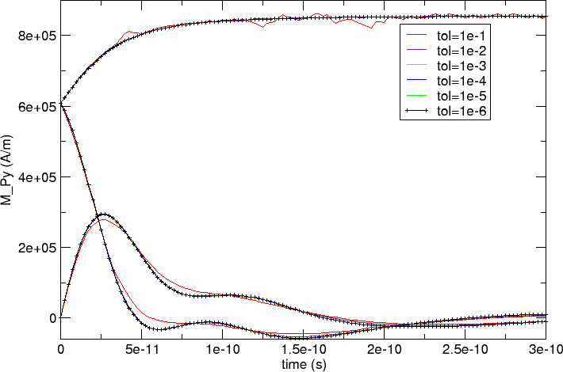

2.26. Example: Timestepper tolerances¶
The tolerance settings of a simulation can greatly affect the performance, the accuracy and the usefulness of a simulation. Section Solvers and tolerance settings provides an overview. In this example, we demonstrate
- how the time integrator’s tolerances can be set and
- how these tolerances affect the simulation results and performance.
The time integrator we use is the PVODE solver from the SUNDIALS package. It is optimised to deal with stiff systems of ordinary differential equations and is therefore very suited for micromagnetic simulations. It can also execute in parallel (i.e. across several CPUs at the same time using MPI). The computational challenge of the time integration lies in the different time scales associated with the (fast) exchange field and the (slower) demagnetisation field.
Sundials provides two parameters rtol and atol (see sundials documentation) to control the required accuracy of the calculations. Sundials uses these parameters to determine the number of iterations required to simulate a given amount of real time (for example one pico second). Equivalently, these parameters determine the amount of real time that can be simulated per iteration.
It is common that the amount of time simulated per iteration varies throughout a simulation as different time step sizes are required to resolve the physics to the same accuracy level. (The Data files (.ndt) data file contains one column last_step_dt which provides the size of the time step. Use ncol to extract this data conveniently.)
The sundials tolerance parameters rtol and atol can be set in nmag using the ts_rel_tol and ts_abs_tol arguments in the set_params function. (The letters ts in ts_rel_tol and ts_abs_tol stand for Time Stepper).
The integration of the Landau Lifshitz and Gilbert equation is carried out on the normalised magnetisation, and the corresponding field (see Fields and Subfields in Nmag) is called m (the magnetisation with the saturation magnetisation magnitude is called capital M in nmag). Because this field is normalised, we set rtol and atol to the same value in this example, and refer to the value just as tol.
We use the program bar_tol.py that:
- re-uses the bar studied in Example 2: Computing the time development of a system but
- carries out the time integration for a number of different tolerance values.
import nmag
from nmag import SI
import time #python standard modules, used to measure run time
def run_sim(tol):
"""Function that is called repeatedly with different tolerance values.
Each function call is carrying out one simulation.
"""
mat_Py = nmag.MagMaterial(name="Py",
Ms=SI(0.86e6,"A/m"),
exchange_coupling=SI(13.0e-12, "J/m"),
llg_damping=0.5)
#compose name of simulation to inlude value of tolerance
sim = nmag.Simulation("bar_%.6f" % tol)
sim.load_mesh("bar30_30_100.nmesh.h5",
[("Py", mat_Py)],
unit_length=SI(1e-9,"m"))
sim.set_m([1,0,1])
#set tolerance (has to be called after set_m())
sim.set_params(ts_abs_tol=tol, ts_rel_tol=tol)
dt = SI(2.5e-12, "s")
timing = 0 #initialise variable to measure execution time
for i in range(0, 121):
timing -= time.time() #start measuring time
sim.advance_time(dt*i) #compute time development for 300ps
timing += time.time() #stop measuring time
#we exclude time required to save data
sim.save_data() #save averages every 2.5 ps
#at end of simulation, write performance data into summary file
f=open('resultsummary.txt','a') #open file to append
f.write('%g %d %g\n' % (tol,sim.clock['step'],timing))
f.close()
#main program
tols = [1e-1,1e-2,1e-3,1e-4,1e-5,1e-6]
for tol in tols:
run_sim(tol)
From a conceptual point of view, we see something new here: the section of the code that starts with:
def run_sim(tol):
defines a function with name run_sim which will carry out a complete simulation every time it is called. It takes one argument: the parameter tol. The simulation name (which is re-used in the name of the Data files (.ndt) data file) contains the value of tol. For example, if the tol=0.1, then the name of the simulation is bar_0.100000 and the name of the ndt data file is bar_0.100000_dat.ndt. We can thus call this function repeatedly for different values of tol, and each time a complete simulation will be run and new data files created. [1]
The main loop of the script:
#main program
tols = [1e-1,1e-2,1e-3,1e-4,1e-5,1e-6,1.0]
for tol in tols:
run_sim(tol)
simply iterates over values 0.1, 0.01, 0.001, 0.0001, 0.00001 and 0.000001 and calls the function run_sim with a different tolerance value in every iteration of the for-loop.
Once the program has finished, we have data files bar_0.000001_dat.ndt, bar_0.000010_dat.ndt, ... and bar_0.100000_dat.ndt that can be analysed and plotted in the usual way.
We show a plot of the x, y and z components of the magnetisation against time (as in Example 2: Computing the time development of a system) for each of the tolerance values. The run with tol=1e-6 is the most accurate, and the corresponding black line has been tagged with little + characters.
We can see that curves seem to coincide (at this scale) apart from the red tol=1e-1 curve which deviates somewhat. We zoom in to region between 1.2e-10 seconds and 2e-10 seconds and focus on the lowers curves in the main plot:

The better resolution reveals that there is a clear deviation of the various curves: the red (0.1), indigo (0.01) and yellow (1e-3) curves approach the black (1e-6) curve in this order. The blue (1e-4) and green (1e-5) curves appear to coincide with the black reference curve.
Another zoom at the z-component of the magnetisation towards the end of the simulated time interval (time>1.8e-10 seconds) shows that the less accurate curves (red, and then indigo and yellow) show a large amount of jitter (although following the reference curve on average).

We conclude that we should use a tolerance of at most 1e-3 for this simulation; better 1e-4 or smaller.
In simulation work, we are of course interested to get the most accurate simulation results. However, in reality this is conflicting with the increased run time that is associated with more accurate simulations. In this example, we have written some performance data into resultssummary.txt. Reformatted, postprocessed and the rows re-ordered, this is the data complete with table headings:
========== ========== ============== =====================
tol steps CPU time (s) CPU time per step (s)
========== ========== ============== =====================
0.000001 740 120.81 0.163
0.000010 356 62.37 0.175
0.000100 182 46.10 0.253
0.001000 119 66.36 0.558
0.010000 114 92.08 0.808
0.100000 88 94.69 1.076
========== ========== ============== =====================
The accuracy of the simulation results decreases from the top of the table downwards. We know from the graphs above that we should use a tolerance setting of 1e-4 or smaller to obtain fairly accurate results (assuming that the 1e-6 curve is used as a reference).
The number of iterations required increases from the tolerance 1e-4 to tolerance 1e-6 by a factor of 4 while the total CPU time increases by a factor of 2.6.
Looking at the greater tolerances 1e-3 and 0.01, we see that while the number of iterations required decreases, the CPU time is increasing. This is the first indication that at this tolerance level the system becomes difficult to treat efficiently by sundials (it basically appears to be noisy and stochastic equations are hard to integrate).
In summary,
- to minimise the simulation time, we need to choose a tolerance value as large as “possible”.
- The definition of “possible” will depend on the context. A good way of obtaining a suitable tolerance value is to run the same simulation repeatedly with decreasing tolerance values. Once the resulting curves converge (as a function of decreasing tolerance settings), a good tolerance level has been found. (This would be 1e-4 for the example shown here.)
- Choosing the tolerance values to be too large, can be counter productive (and take much more CPU time than the lower accuracy level).
- The default value for the sundials tolerances is shown in the documentation of set_params. A simulation can often be accelerated significantly by increasing this value.
- A change of the tolerances has to be considered together with the convergence criterion for hysterises loop calculations (see next section: Hysteris loop calculation not converging? A word of warning ...)
2.26.1. Hysteris loop calculation not converging? A word of warning ...¶
The hysteresis and the relax command need to have a criterion how to decide when the simulation has reached a (meta)stable state and when the relaxation (at a given applied field) should be considered to have been reached. A common approach (which is used by OOMMF and nmag, for example) is to monitor the change of the (normalised) magnetisation with respect to time (i.e. dm/dt). If the absolute value of this drops below a given threshold, then one considers the system as converged (the relax command will return at this point, while the hysteresis command will move to the next field). This threshold can be changed from its default value with the set_params simulation method (the attribute is stopping_dm_dt).
The choice of the tolerances (ts_rel_tol and ts_abs_tol) must respect the chosen stopping_dm_dt value (or conversely the stopping_dm_dt needs to be adapted to work with the chosen tolerances): large values for the tolerances correspond to lower accuracy and to larger random fluctuations of dm/dt, which consequently may never become lower than stopping_dm_dt. In such a case the simulation never returns from the relax command, because the convergence criterion is never satisfied.
In all the examples we have studied, we have found that the default parameters work fine. However, if you find that a simulation never returns from the hysteresis or relax command, it is worth reducing the tolerances for the time stepper (on increasing stopping_dm_dt) to see whether this resolves the problem).
| [1] | We could, in fact, avoid re-creating all the operator matrices and the BEM, and just repeat the simulation with varying values of the tol parameter. However, this would mean that the data is written into the same file (so is slightly less convenient here). It would also be a less pedagogical example in this guided tour. |